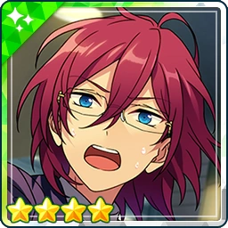
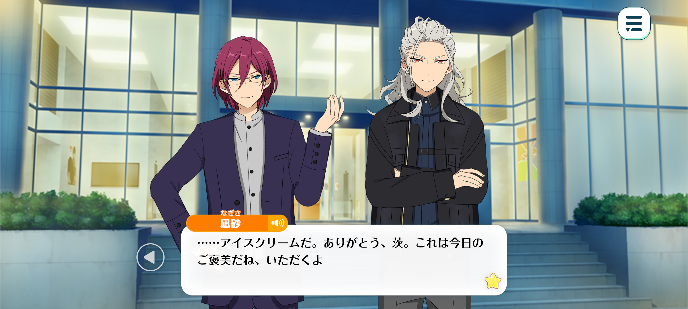
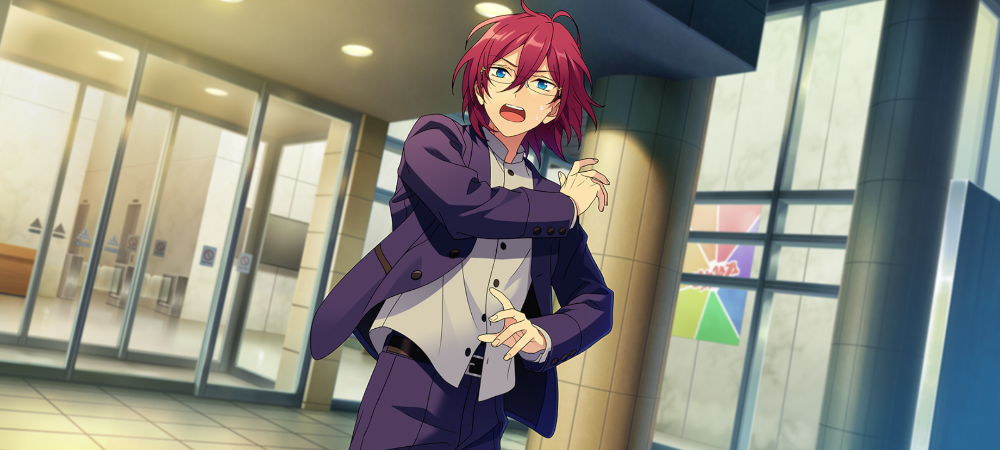
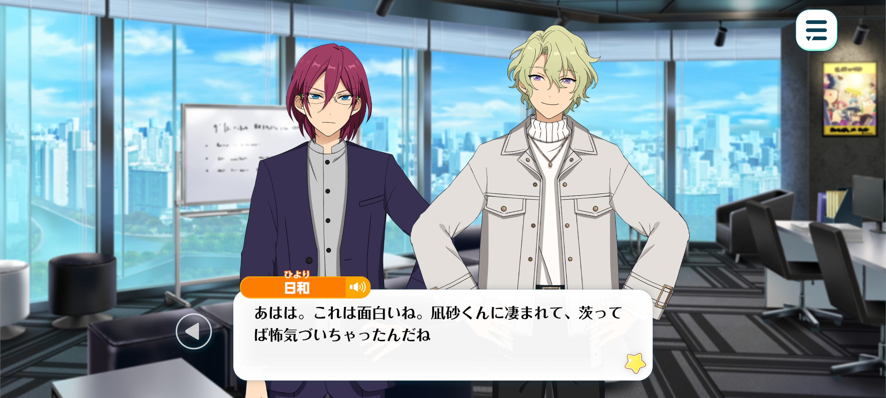
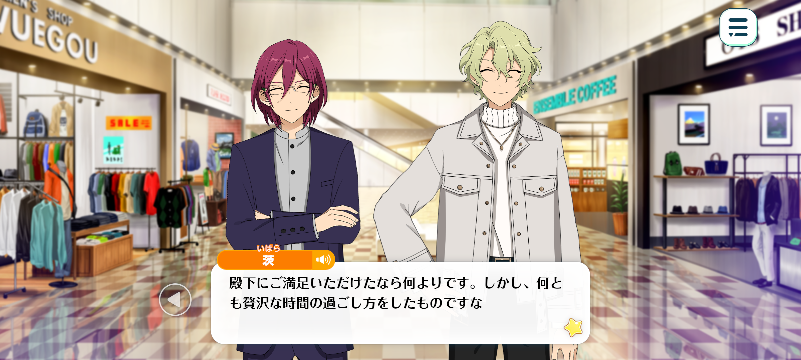
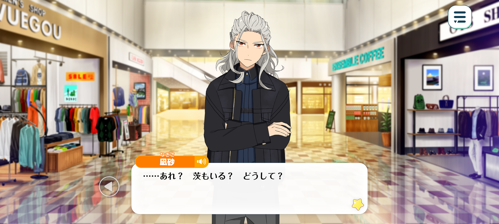

The Enemy Within
Idol Story



Ibara: Thank you for your hard work today! As always, it's a pleasure to work alongside someone as talented as yourself. ☆
Today's recording focused primarily on ad-libs. I must admit, I was rather concerned about it beforehand, but it seems my worries were entirely unfounded.
The staff have prepared some ice cream for us. Would you care for some chocolate, Your Excellency?
Nagisa: …Ice cream? Thank you, Ibara. A reward for today's work, then.
(...!?)
Ibara: I look forward to working with you again tomorrow, with the same enthusiasm as always, Your Excellency, if you'll have me!
Nagisa: …
Ibara: Is something the matter? You seem rather displeased, though perhaps I'm simply reading too much into it?
If I've done something wrong, please don't hesitate to tell me. I welcome any criticism that might help me improve. Whatever Your Excellency requires of me, I, Saegusa Ibara, shall do everything in my power to fulfil it. Ha ha ha! ☆
Nagisa: …So noisy. Shut up.

Ibara: Huh…!?
…Pardon? Y-Your Excellency? Why have you suddenly become upset? Have I done something to offend you?
If I have, please! Please tell me!?

—And that's more or less what happened.
Hiyori: Ahaha! How amusing. So Nagisa-kun threatened you, and you’re this frightened?
Ibara: This is no laughing matter. His Excellency hasn't spoken to me since.
Hiyori: Oh? So you've come all this way just to ask me why Nagisa-kun got upset, hm?
Ibara: Precisely. Since today is His Excellency's day off, I'd like to take this opportunity to get to the bottom of the matter.
Hiyori: I don't think you need to be so worried. Maybe something's been getting on his nerves.
Ibara: Perhaps, but I find it difficult to believe that something so trivial would upset him to such an extent.
Hiyori: Fufu…
Ibara: What is it? What's so amusing? I assure you, this is no laughing matter, Your Highness!
Hiyori: No, no! It's just that I didn't realise you were quite so impatient, Ibara. How cute!
Ibara: I suppose I must be careful not to bring up anything that might upset him, even if I don't know what those things might be.
Until now, I've generally been able to identify the cause whenever His Excellency is displeased. But this time, I'm completely at a loss.
I'm unable to do anything to alleviate whatever it is that's troubling him.
And so, I humbly ask for your assistance, Your Highness, as someone who knows His Excellency better than anyone!
Hiyori: ...Wow! How unusually honest and admirable of you. I'm impressed!
Ibara: Should I continue to cause His Excellency distress, it could jeopardise the success of future Eden and Adam activities.
I therefore believe the best course of action is to resolve this matter as soon as possible.
Hiyori: I see! So that's why you're in such a hurry.
Well, of course I know exactly why Nagisa-kun is upset! Coming to me was absolutely the right decision.
Ibara: You're a lifesaver! Then, please—
Hiyori: However! Simply telling you the answer would be terribly boring, wouldn't it? If you're asking me for a favour, I want you to show me just how serious you are!
Ibara: Show you how serious I am? How would you like me to demonstrate that? Would dogeza suffice?
Hiyori: Fufu! You simply have to accompany me on a little shopping trip!

Hiyori: I managed to find all sorts of adorable spring outfits! What good weather ♪
Ibara: I'm delighted to hear you're enjoying yourself, Your Highness. Although, I must say, this is rather an extravagant way to spend one's time.
Hiyori: Oh, please! Entertain me a little before you start lecturing me about extravagance!
I ask you what kind of clothes you like, and all you give me is some generic, rehearsed answer. You know all the latest trends, but all you ever think about is how long it'll be before they're out of fashion!
Talking to you is no fun at all.
I've even tried introducing you to the joys of more refined pursuits, but you're so obsessed with work that I suppose you're simply beyond saving!
Ibara: For me, work provides much the same satisfaction as your more refined pursuits, so you needn't worry, Your Highness! Hahaha! ☆
In any case, might I ask you to finally tell me what was troubling His Excellency?
Hiyori: Hm, fine! I'm only killing time now, anyway. Besides, you've practically become my personal luggage carrier!
You wanted to know why Nagisa-kun was in such a bad mood, didn't you?
Fufu... Well, the reason Nagisa-kun glared at you was—
Ibara: Yes…
Hiyori: He has a cavity!
Ibara: ...Pardon? He has... a cavity?
Hiyori: Well, to be more precise, he has a toothache. We don't know for certain whether it's a cavity yet.
Apparently, he'd been eating the ice cream the staff prepared that day, and it made his tooth hurt. That's why he snapped at you.
But he knew that if he told you about it, you'd take the ice cream away from him, so he kept quiet and simply glared at you instead!
Ibara: ...So all this trouble was caused by a mere toothache?
Hiyori: Nagisa-kun's using his day off to visit the dentist.
Look, I think he went to that dentist today. He should be just about finished by now…

Nagisa: ...Hiyori-kun. You've come to pick me up.
…Oh? Ibara is here too? Why?
Hiyori: Sorry, Nagisa-kun! Ibara was so worried that he'd done something to upset you that I ended up telling him about your toothache.
Nagisa: ...Oh, I see. Sorry for causing you trouble, Hiyori-kun. And you too, Ibara. My teeth are fine now, so there's no need to worry.
Ibara: Yes...? Ah, wonderful! That's excellent news. Your dental health is of the utmost importance, after all.
Nagisa: ...Ibara. I'm sorry about earlier. I was a little too harsh on you.
Ibara: Not at all. Now that I understand why you were upset, I can finally put my mind at ease.
However, Your Excellency, I must apologise in advance for what I'm about to say.
From this day forward, you are forbidden from eating any and all desserts or sweets!
Nagisa: ...There's no need to go that far. It wasn't a cavity. I just have sensitive teeth.
Ibara: That makes no difference! Whether it's a cavity or tooth sensitivity, both can cause you pain!
Nagisa: ...The dentist also taught me how to brush my teeth properly. So there shouldn't be a problem anymore, should there?
Ibara: No. I've already made up my mind. No matter what you say, I won't be changing my decision. My word is final.
For the time being, I shall be keeping a close eye on your eating and brushing habits!
And if necessary, I'll even brush your teeth for you myself!
Nagisa: …You’re pushing your luck, Ibara. I’ve said this before and I’ll say it again - I am above you, you are below me—
Ibara: That threat won't work on me this time! This entire situation was the result of my own negligence!
I've allowed you far too much freedom as of late. I shall rectify that immediately!
Nagisa: ...What should I do, Hiyori-kun? Ibara is even scarier than usual.
Hiyori: Fufu! It seems you've switched places! Having to deal with Ibara is such a bother. Why don't you run away with me, Nagisa-kun?
Ibara: You most certainly will not! Enough of this nonsense! I won't allow this to happen again!